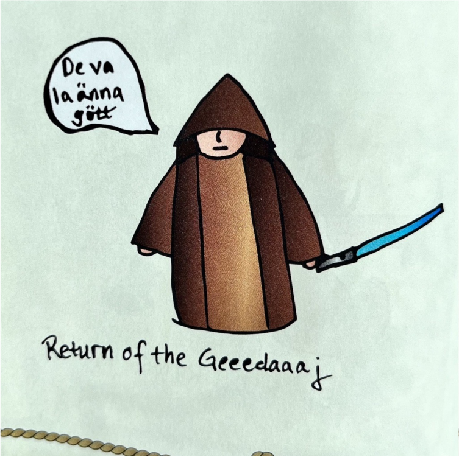
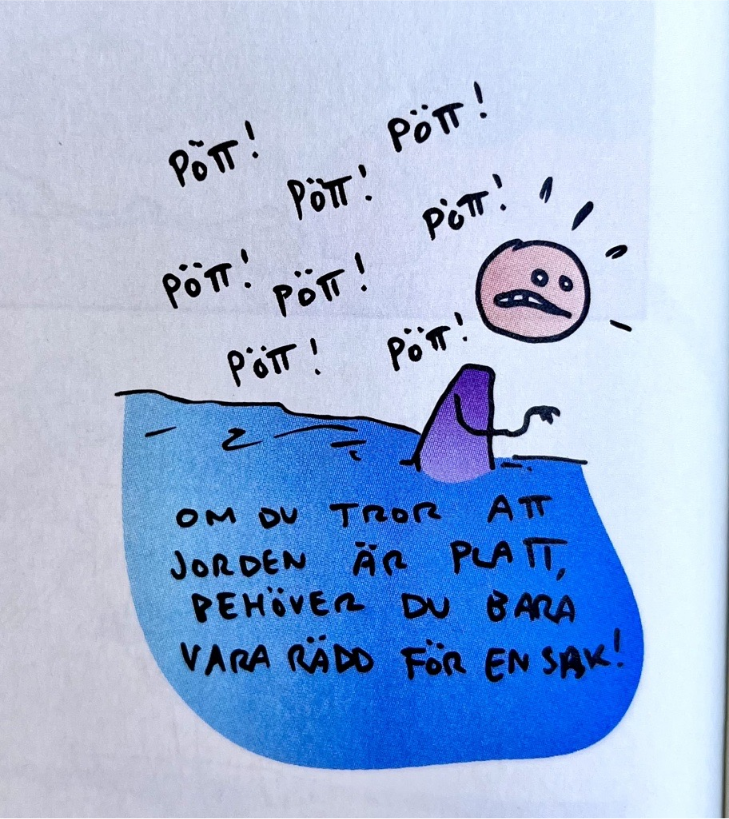
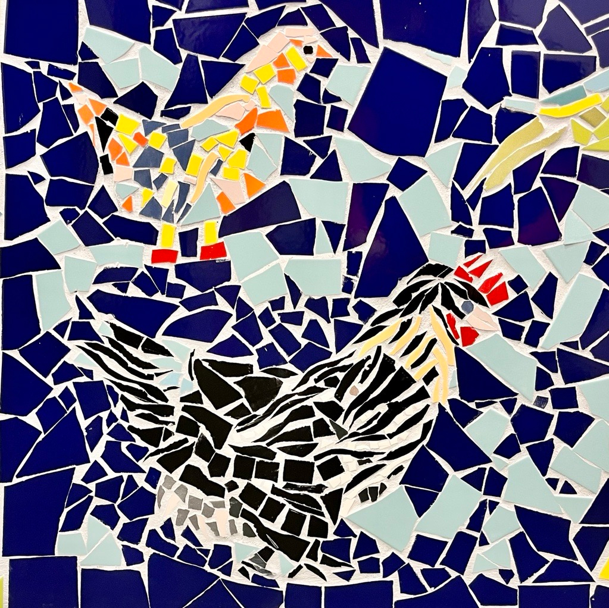
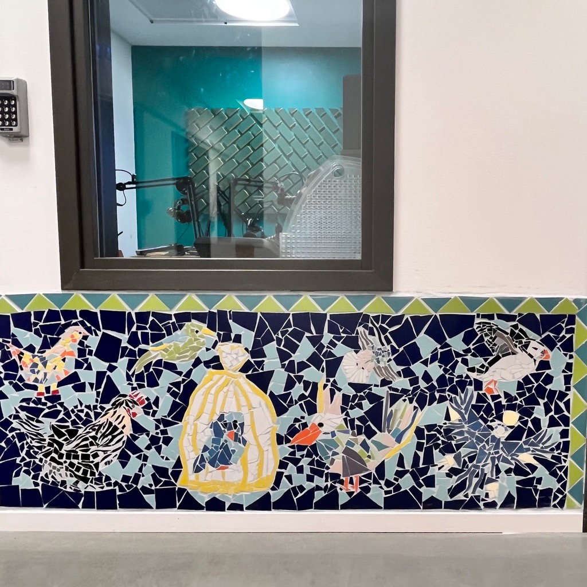
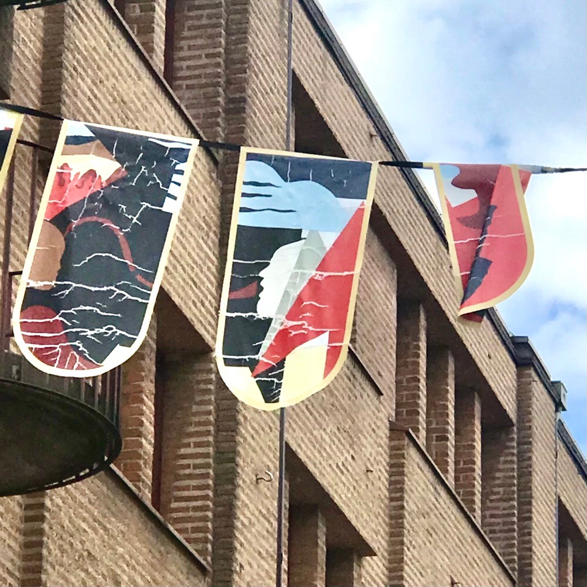

I am a aspiring UX designer based in Gothenburg, Sweden with experience
in education and fine arts. I am passionate about improving peoples
lives through design and love to learn new things every day.
Why UX?
I never knew how to answer the question: “What do you want to be when
you grow up?” And it always seemed like a failing of some sort.
I have loved art and design since childhood and have always created in
one way or another for fun, for work or for my mental health. The one
reason I haven't pursued a career in art is that I need to work with and
for other people to feel complete.
I tried to combine these two driving forces in a career as a teacher and
taught upper secondary school for about eighteen years until my
situation got unmanageable and fatigue set in.
I choose to see my recovery time as a learning experience. Learning to
reflect. Learning to set boundaries. Learning to prioritize. I have by
no means mastered these skills but I aim for it.
How does this translate into UX? Well, from as far as I can remember
I've loved solving problems, and with my drive to help people and my
love for aesthetics and growing skills of reflection it is the perfect
job for me because it combines all of my joys, passions and natural
inclinations.
If “UX designer” had existed as a career choice when I grew up, it would
have been my answer to the question I never knew the answer to. It
wasn't my failing, it was just bad UX.
Nerd or Party Queen?
Nerd or party queen? Both of course! I have plenty of nerdy interests. I
love fantasy and science fiction. So much in fact that I've been a
member of both West Coast Trekkers and Mithlond, the Tolkien Society of
Gothenburg. You will probably find me in the Nerd parade with friends
and family proudly and festively strolling down Avenyn the last weekend
in May.
I have enjoyed arranging parties since middle school and it is still one
of my favourite things to do. There have been banquets and birthday
parties, weddings and masquerades. Mostly I've arranged themed parties
and that is just the most fun because you get to tell a story and
transport the guests to another place in time or fantasy. I think my
love for themed parties stems from my love of reading.
Reading is my happy place and I can escape to whatever, whenever and
wherever I feel like hanging out for a while. I have devoured stories
since I could read and fairy tales, creatures and folklore have always
captured my imagination.
You will find that I'm (almost) always up for a party, an event or a
meet up. I love to meet new people because people interest me. I'm more
of a listener than a talker but I like the exchange of thoughts and
ideas. Curiosity is one of my biggest traits.

Quick summary
Borne in 1972 ( and thankfully the only generation (almost) that get
the joke from Cortegeprogrammet 2023)
Married with children. I had Estelle at 37 and Elliot at 40.
Have travelled to 4 of 7 continents, visited 21 of 45 countries in
Europe, and been to all 25 counties in Sweden. I still can't see the
bottom of my bucket list.
My first computer was a Macintosh Plus and I still speak apple but I'm
also fluent in IBM.
Not much of a gamer but I can still dream of Myst.
I don't sing much but have a good voice.
I paint but the work you have seen/can see in Gothenburg is a collage
or a mosaic.




These art works are the results of me participating in Kulturnatta 2020
and 2022. The black hen is my contribution to the multi-artists mosaic
in the city library. The collage became one of several flags made by
different artists that decorated an area of the city in 2021 and 2022.
... I've gotta wear shades
So what's next? The future I'm manifesting is all about experiences,
discovery and joy; in work and in life. To be a UX designer is going to
be absolutely fabulous! I can't wait to get started!
I want to make a difference in peoples lives on a small or big scale.
The things I wish I could design away are injustice, prejudice, racism,
fascism and global warming. But even making one persons life: simpler,
better and more fun is also a win!
It takes courage to suck at something new! But as a curious person
learning new things is a complete high and I'm fortunate to to learn
from the best: Victoria Wånsander, Nina Mujdzic, Mehmet Aydin Baytas
(and more to follow) at It-högskolan in Gothenburg
I'm also going to name drop some of my fantabulous classmates that are
absolute rockstars: Kajsa Tunius, Isabelle Modén, Fredrik Aidefors,
Erica Elfström and Mateusz Posar. Working together this year has been
amazing and I wouldn't have had as much fun without them.
If you feel that we could design some amazing user experiences together
- get in touch!